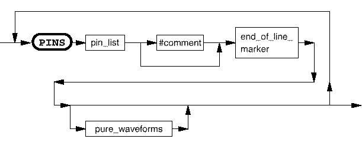

wavetable
A wavetable is used to apply pure waveforms to a list of pins. It is divided into one or more PINS sections. Within one PINS section, pure waveforms must be specified.
The syntax for this section is shown below:

pin_list |
The name of the pin or pins for which the following pure waveforms are to be defined. This may also include names of pin groups created using the DFGP command. |
Functional changes
- Introduced before SmarTest 6.3.2
- SmarTest 6.5.2: Logical waveform is not supported.